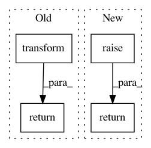

332759f41664989156b7a2994e8c21ebc9e7f798,sklearn/impute/_iterative.py,IterativeImputer,transform,#IterativeImputer#Any#,644
Before Change
check_is_fitted(self)
if self.add_indicator:
X_trans_indicator = self.indicator_.transform(X)
X, Xt, mask_missing_values = self._initial_imputation(X)
if self.n_iter_ == 0 or np.all(mask_missing_values):
return Xt
imputations_per_round = len(self.imputation_sequence_) // self.n_iter_
i_rnd = 0
if self.verbose > 0:
print("[IterativeImputer] Completing matrix with shape %s"
% (X.shape,))
start_t = time()
for it, estimator_triplet in enumerate(self.imputation_sequence_):
Xt, _ = self._impute_one_feature(
Xt,
mask_missing_values,
estimator_triplet.feat_idx,
estimator_triplet.neighbor_feat_idx,
estimator=estimator_triplet.estimator,
fit_mode=False
)
if not (it + 1) % imputations_per_round:
if self.verbose > 1:
print("[IterativeImputer] Ending imputation round "
"%d/%d, elapsed time %0.2f"
% (i_rnd + 1, self.n_iter_, time() - start_t))
i_rnd += 1
Xt[~mask_missing_values] = X[~mask_missing_values]
if self.add_indicator:
Xt = np.hstack((Xt, X_trans_indicator))
return Xt
def fit(self, X, y=None):
Fits the imputer on X and return self.
After Change
Xt[~mask_missing_values] = X[~mask_missing_values]
return super()._concatenate_indicator(Xt, X_indicator)
def fit(self, X, y=None):
Fits the imputer on X and return self.
In pattern: SUPERPATTERN
Frequency: 4
Non-data size: 4
Instances
Project Name: scikit-learn/scikit-learn
Commit Name: 332759f41664989156b7a2994e8c21ebc9e7f798
Time: 2019-10-28
Author: g.lemaitre58@gmail.com
File Name: sklearn/impute/_iterative.py
Class Name: IterativeImputer
Method Name: transform
Project Name: dask/dask-ml
Commit Name: 8f49b9dc1d67c01b005ebd8ead16d709916613da
Time: 2018-07-20
Author: TomAugspurger@users.noreply.github.com
File Name: dask_ml/preprocessing/label.py
Class Name: LabelEncoder
Method Name: fit_transform
Project Name: automl/auto-sklearn
Commit Name: 30e93fa23adde9e9e36fede4552d2ff932497f6c
Time: 2017-10-25
Author: feurerm@informatik.uni-freiburg.de
File Name: autosklearn/pipeline/classification.py
Class Name: SimpleClassificationPipeline
Method Name: predict_proba
Project Name: IndicoDataSolutions/finetune
Commit Name: 4291a8e18e62d742e2689157e56726817c1cdf8e
Time: 2018-09-10
Author: benlt@hotmail.co.uk
File Name: finetune/target_encoders.py
Class Name: SequenceMultiLabelingEncoder
Method Name: fit_transform